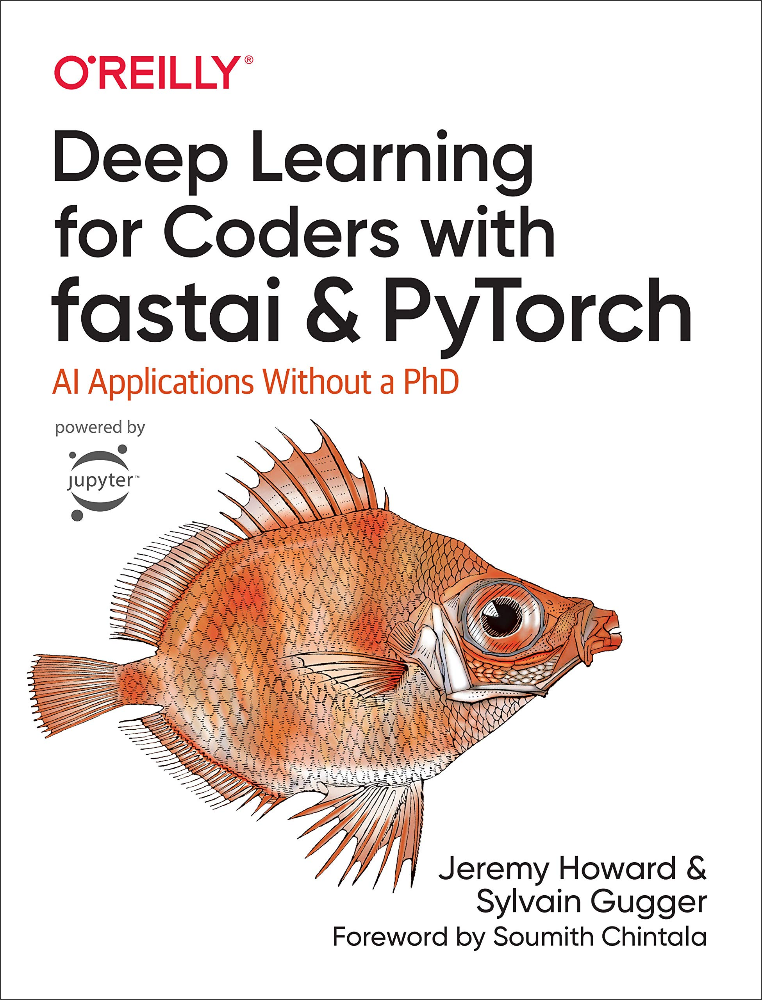

Hands on Neural Networks¶
 Teddy Warner| Fall, 2024 | X-X minutes
Teddy Warner| Fall, 2024 | X-X minutes

Deep Learning for Coders with fastai and PyTorch: AI Applications Without a PhD
Market Trend Classification with Deep Convolutional Neural Networks¶
I recently started John C. Bogle’s The Little Book of Common Sense Investing, and in anthesis of the books advocation for simple, long-term investments (perticulary index funds), I though it would be a bit fun to fine-tune a CNN to classify market trends for short-term trading (this also seems to stay on tune with the first lesson of the fast.ai course).
This is by no means investment advice, the model simply classifies the probibility of the input chart of being a known market trend and outputs a boolean “Should I invest: Yes/No” based upon its results. Enjoy! 😺
Download images of various stock chart patterns
Implemented boolean search queries to better filter the scraped data.
Scraping stock chart images of the internet is a rather dumb way of fitting this model, would definetly be better off with a better dataset (like the following), but I want to learn fast.ai so we’re running with it.
- CRSP US Stock Databases
- Stock Chart Patterns
- 200+ Financial Indicators of US stocks (2014-2018)
- Stock Prices Predictions-EDA,LSTM(DeepExploration)
Train the model
Remove any failed downloads
Data augmentation
Data Loaders
Show a batch to verify augmentations
Pre-trained model established
Find the optimal learning rate
Fine-tune the model
Save the model
Use the model
1 2 3 4 5 6 7 8 9 10 11 12 13 14 15 16 17 18 19 20 21 22 23 24 25 26 27 28 29 30 31 32 33 34 35 36 37 38 39 40 41 42 43 44 45 46 47 48 49 50 51 52 53 54 55 56 57 58 59 60 61 62 63 64 65 66 67 68 69 70 71 72 73 74 75 76 77 78 79 80 81 82 83 84 85 86 87 88 89 90 91 92 93 94 95 96 97 98 99 100 101 102 103 104 105 106 107 108 109 110 111 112 113 114 115 116 117 | |
File upload
GeoKnowr: Solving GeoGuesser with Deep Convolutional Neural Networks¶
There’s this guy, Rainbolt, who is particularly good at the game GeoGuessr. The premise of the game is you are placed at a random location in a Google Maps interface, and you’re assessed on the time it takes you to guess where you are, and how accurate your guess is.
There’s a lot of interesting material on learning the tricks/metals to this game, I thought it would be fun to incorporate a few of them into a classification net. - Beginner’s Guide to Geoguessr - GeoGuessr META - GeoGuessr- The Top Tips, Tricks and Techniques
Set up paths and data
25 most probable geoguessr countries
Download images of cityscapes and landscapes of each country
Verify and clean up images
define dataloaders and augment data
Model Def
Progressive training
Find optimal learning rate
Train model
I took several attempts to improve the accuracy of this model without much luck (from ~15% to ~20% accuracy). While my data augmentation steps seem to be slightly helping with overfitting, a better dataset all together would hopefully aid in increasing the accuracy.
Fine-tuning
Interpretation and model assesment
Image cleaning
Save and export
Colab UI
Emotional (Artificial) Intelligence¶
My highschool mandated an Emotional Intelligence unit for all incoming Freshman, and while my highschool days are well behind me, my younger sister just started the course. That being said, I thought it would be fune to fine-tune a convolutional neural network to classify facial expressions for emotion prediction.
I’ve chosen to use the levit_384 architecture and a Kaggle dataset “Face expression recognition dataset” for this task. Enjoy!
Set up Kaggle API
Download the dataset
Unzip the dataset
Set up paths
Define label names
Create DataBlock
Create LeViT model
I wanted to toy around with some of the models from the article “Which image models are best?”, and wound up implementing Levit 384, a slightly larger yet still rather quick model. That being said, I wound up fitting this model with an A100 through Google Colab and absoutly chewed through my GPU hours. 😿
Create Learner
Fine-tune the model
Save the model
Make Predictions
UI
- https://docs.fast.ai/
- https://www.kaggle.com/code/jhoward/is-it-a-bird-creating-a-model-from-your-own-data
- https://www.kaggle.com/code/jhoward/jupyter-notebook-101
- https://www.forbes.com/advisor/investing/how-to-read-stock-charts/
- https://fastai1.fast.ai/vision.models.html
- https://medium.com/@bijil.subhash/transfer-learning-how-to-pick-the-optimal-learning-rate-c8621b89c036
- https://www.linkedin.com/pulse/analyzing-historical-stock-data-python-yahoo-finance-ali-azary-zptxe/
- https://medium.com/@bijil.subhash/transfer-learning-how-to-pick-the-optimal-learning-rate-c8621b89c036
- https://www.jeremyjordan.me/nn-learning-rate/
- https://www.reddit.com/r/MLQuestions/comments/13javik/using_image_recognition_classification_to_detect/
- https://www.investopedia.com/terms/e/efficientmarkethypothesis.asp
- https://www.kaggle.com/code/stetelepta/finding-chart-patterns
- https://amunategui.github.io/unconventional-convolutional-networks/index.html
- https://arxiv.org/abs/1603.06995
- https://huggingface.co/foduucom/stockmarket-pattern-detection-yolov8
- https://www.nbshare.io/notebook/628144649/Stock-Charts-Detection-Using-Image-Classification-Model-ResNet/
- https://www.nbshare.io/notebook/84089365/Stock-Sentiment-Analysis-Using-Autoencoders/
- https://www.nbshare.io/notebook/992875219/Demystifying-Stock-Options-Vega-Using-Python/
- https://www.nbshare.io/notebook/84311835/Calculate-Implied-Volatility-of-Stock-Option-Using-Python/
- https://www.nbshare.io/notebook/751930309/Stock-Tweets-Text-Analysis-Using-Pandas-NLTK-and-WordCloud/
- https://www.nbshare.io/notebook/615052180/Plot-Stock-Options-Vega-Implied-Volatility-Using-Python-Matplotlib/
- https://www.nbshare.io/notebook/318554522/Calculate-Stock-Options-Max-Pain-Using-Data-From-Yahoo-Finance-With-Python/
- https://github.com/CharlesLoo/stock-pattern-recorginition